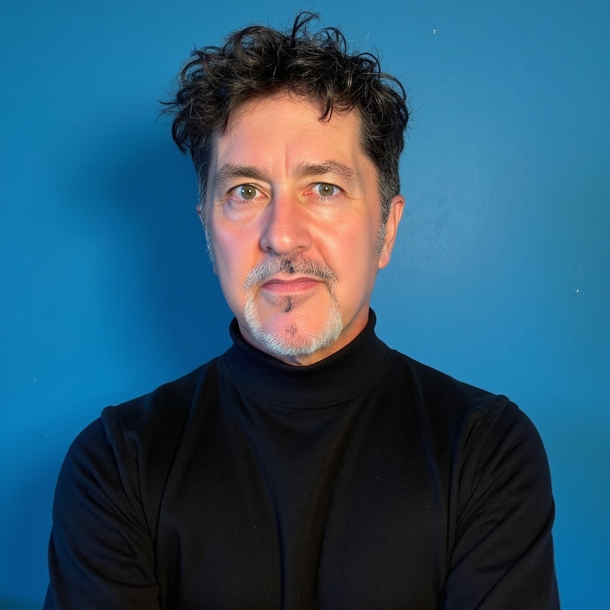

Brand, GTM, demand generation, culture, and AI — not as separate disciplines, but as one commercial system.

Most organizations treat brand, marketing, demand generation, customer experience, and culture as separate functions. Kevin Keohane has spent two decades proving they are one system — and that when they operate as one, growth becomes predictable rather than episodic.
His career spans 14 years based in London at the world's leading agencies and consultancies — WPP, Publicis Groupe, and a top-ranked UK management consultancy — before building an independent practice in the US that counts Deloitte, Workday, and Commvault among its anchor clients.
Today Kevin runs Brand & Talent Unlimited and Go-to-Market Maven as an active independent practice, serves on the board of LaunchPad INW as Chief of Staff to the CEO, and takes on senior advisory and Fractional CMO engagements for organizations that need executive marketing leadership without full-time overhead.
He is an OpenClaw practitioner — using agentic AI orchestration to wire autonomous research, adaptive messaging logic, and direct pipeline from strategy to production. He does not talk about AI transformation. He runs it.
Published author of The Talent Journey and Brand & Talent. Adjunct Professor of GTM Strategy at the University of Montana's Gallagher School of Business since 2016. US and EU passports. Spokane, WA.